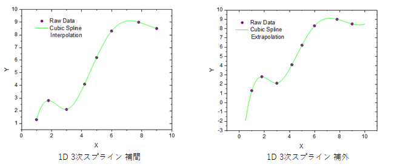
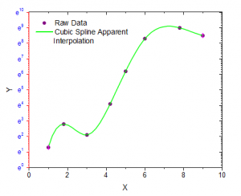

関連する動画はこちら:Origin VT-0010 Interpolation
関連する動画はこちら:Origin VT-0010 Interpolation
 関連する動画はこちら:Origin VT-0010 Interpolation
関連する動画はこちら:Origin VT-0010 Interpolation

補間は、既知の離散データから新しいデータポイントを計算し、作成する方法です。この機能は、次の4つの手法から1つを用いて、線形に等間隔な補間曲線を生成します。線形、3次スプライン、3次B-スプライン、Akimaスプライン
Originでは補間ツールが、図上で補間もサポートしているため、現在の軸設定に従ってデータを補間できます。

このダイアログボックスは、interp1xyXファンクションを実行して補間/補外の計算を行います。
| 再計算 |
分析結果の再計算の設定を変更します。
詳細情報は、 分析結果の再計算をご覧下さい。 |
|---|---|
| 入力 |
補間するXY範囲を指定します。 範囲の設定に関する詳細は、入力データを指定するをご覧ください。 |
| 手法 |
補間/補外の手法を指定します。
|
| Xデータの生成 |
Xデータを生成するための2つのオプションを選択します。
|
| Xの最小値 |
補間曲線のXの最小値 Note: 降順のXデータを生成したい場合は、Xの最小値 > Xの最大値 としてください。 |
| Xの最大値 |
補間曲線のXの最大値 |
| 境界 |
境界条件は3次スプラインでのみ利用できます。
|
| スムージング因子 |
非負のパラメータは、3次Bスプラインで補間された曲線の滑らかさを指定します。因子は、滑らかさと近似とのバランスをコントロールするものです。大きな値にすると、より滑らかな曲線になります。 スムージング因子は3次B-スプラインでのみ利用できます。 |
| 係数 |
スプラインまたはBスプライン法を使うときのスプライン係数 |
| 図上で補間 |
グラフ上で補間を行う場合のみ利用できます。これが選択されていると、軸スケールタイプが線形からlog10などに変更されているとき、図上の値に対して補間が実行されます。 |
| 出力 |
出力XYデータ範囲を指定します。 |
詳細なアルゴリズムは、XからYを補間/補外する をご覧ください。
参考文献については、XからYを補間/補外する をご覧ください。